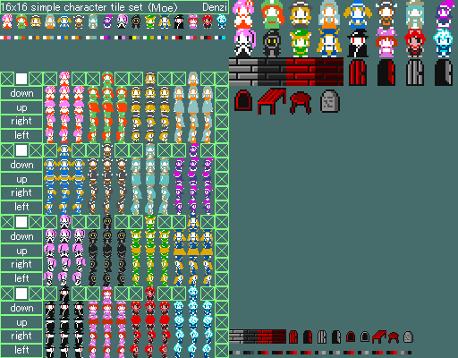

Overview
This jQuery plugin supports your image management.
The following will be the main functions:
- You can manage images by granting key for each them.
- You can clip a part of image that is merged many images like icon-collection.
画像の管理を補助する jQuery プラグインです。
以下が、主な機能となります:
- 画像にキーを付けて管理できる。
- アイコン集などの複数画像が 1 枚にまとまめられた画像を、部分的に切り出せる。
Download sources
Supported jQuery Versions
- 1.10.1
- 1.9.1
- 1.8.3
Supported Browsers
- IE 10
- IE 9
- IE 8
- IE 7
- Chrome
- Firefox
- Safari
- Mobile Safari
License
Example 1. Clip a part of image.
For example, I am assuming that you want to use a 32x32 character image what is a part of the following 512x400 image.
例えば、あなたは以下の 512x400 画像の中で、右上の 32x32 キャラのひとりを使いたいとします。
("Denzi091025-5.PNG" was created by Denzi under license from CC BY-SA 2.1 JP.)
In this case, you can clip a one character image by the following code.
その場合は、以下のように書くことで、一体のみを切り出すことができます。
$.imageIndexer().clip(
'black_dressed_girl', // Free image-key for management
'/path/to/image.png', // Image path or URL
[512, 400], // Real image size [width, height]
[32, 256], // Clip start position [top, left]
[32, 32] // Clip size [width, height]
);
// Create as a jQuery object.
var $blackDressedGirl = $.imageIndexer().asChip('black_dressed_girl');
Like this:
Example 2. Partition a image.
If you want to manage sorted images at even intervals, then you can use more easy method.
等間隔で並んでいる画像を管理する場合は、より手軽な方法も使うことができます。
$.imageIndexer().partition(
'charas32', // Free image-key for management
'/path/to/image.png', // Image path or URL
[512, 400], // Real image size [width, height]
[32, 32], // Size of a part [width, height]
{
targetPos: [0, 256], // Optional target position [top, left],
// default is [0, 0]
targetSize: [256, 64] // Optional target size [width, height],
// default equals Real-image-size
}
);
//
// The 256x64 part of image is partitioned by 32x32 with index
//
// +-----+-----+-----+-----+-----+-----+-----+-----+
// |[0,0]|[0,1]|[0,2]|[0,3]|[0,4]|[0,5]|[0,6]|[0,7]|
// +-----+-----+-----+-----+-----+-----+-----+-----+
// |[1,0]|[1,1]|[1,2]|[1,3]|[1,4]|[1,5]|[1,6]|[1,7]|
// +-----+-----+-----+-----+-----+-----+-----+-----+
//
var $blackDressedGirl = $.imageIndexer().asChip('charas32', [1, 0]);
//
// This way equals to above [1, 1]
//
var $blackMage = $.imageIndexer().asChip('charas32', 1, 1);
//
// And getable by sequence
//
// +----+----+----+----+----+----+----+----+
// | 1 | 2 | 3 | 4 | 5 | 6 | 7 | 8 |
// +----+----+----+----+----+----+----+----+
// | 9 | 10 | 11 | 12 | 13 | 14 | 15 | 16 |
// +----+----+----+----+----+----+----+----+
//
var $oneEyedWoman = $.imageIndexer().asChip('charas32', 15);
Like these:
API References
ImageIndexer Instances Management
$.imageIndexer() を実行すると、
内部に定義されている ImageIndexer インスタンスを生成して返します。
再び $.imageIndexer() を実行した場合は、 Singleton Pattern で同じインスタンスを返します。
ほとんどの場合はこれを実行するだけで充分でしょう。
しかし、もし違うインスタンスを作りたい場合は、$.imageIndexer('key') を実行することで、
キーを付与して別のインスタンスを生成し、管理することができます。
ImageIndexer Instance APIs
- clip(imageKey, url, realSize, clipPos, clipSize, options={})
-
引数に関しては Example に説明があるので省略します。
optionsにはwithPreloadingのみを設定できます。 この説明は Preload の項目にて解説します。 - upload(imageKey, url, realSize)
-
clipの shortcut です。画像全体を登録します。 - partition(imageKey, url, realSize, partSize, options={})
-
Example に説明があるので省略します。
optionsにはclipと同じくwithPreloadingを設定することもできます。 - asChip(imageKey, [partIndex...])
- Example を参照して下さい。
- asData(imageKey)
- 内部的に保持している画像のインデックスデータを返します。 おそらくは、画像 URL が必要な場合に使用することになるでしょう。
- withPreloading = true
-
clipやpartitionなどによる画像登録時に Preload するかを設定します。 default では常に行われますがfalseを設定すれば一律停止され、asChipなどの要素生成時に load することになります。
clipやpartitionのoptionsにて 実行毎に設定することも可能です。
ImageIndexer APIs
Please read the CoffeeScript source code, sorry.
$.imageIndexer APIs
- $.imageIndexer()
- 上記で解説したので省略します。
- version
- バージョン番号の文字列を返します。
- getClass()
- 内部のクラスである
ImageIndexerを返します。通常必要ではありません。
Other Links
- jQuery ImageIndexer | jQuery Plugin Registry
- それなりブログ .. This is my blog!